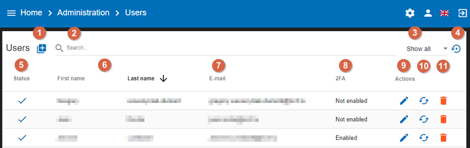
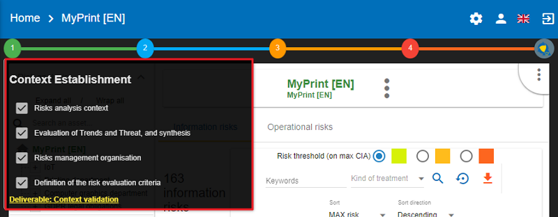
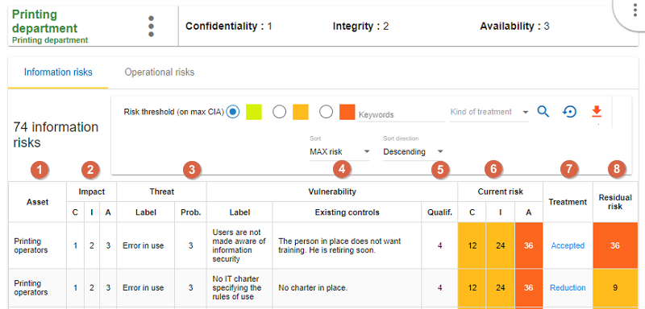
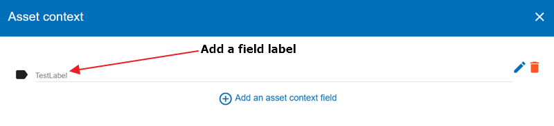
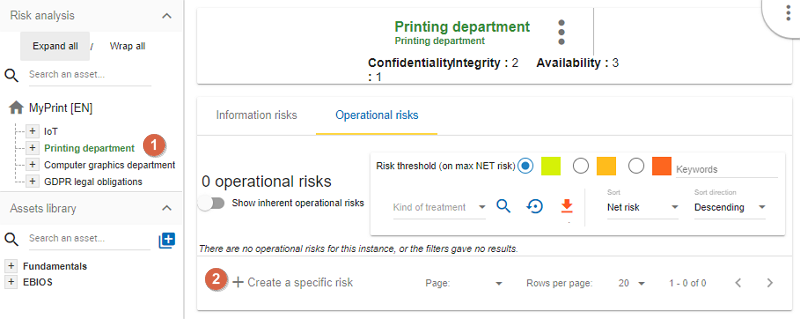
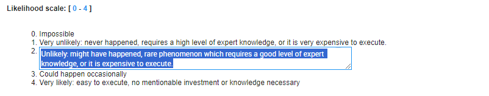
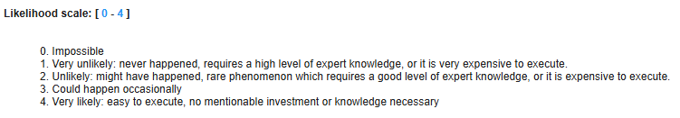
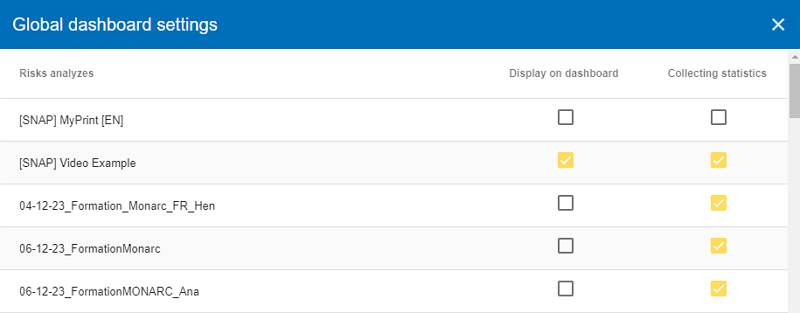
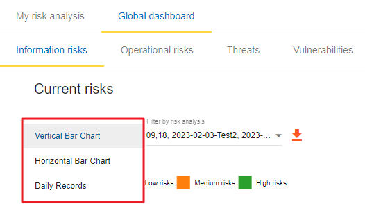

1. Introduction
1.1. Purpose
The purpose of this document is to provide a comprehensive explanation of all the options in the MONARC tool.
1.2. Other documents
|
1.3. Syntax used in the document
|
All numbers in white on an orange background are used on print-screen views to provide additional explanations. Explanations are always after the view with the corresponding numbering. e.g. 1. |

|
MONARC Reference |
1.4. Syntax used in MONARC
|
The three-dot menu icon brings up the menu items. |
|
Create/add something in context (assets, recommendations, etc.). |
|
Most fields of MONARC display additional information when the pointer stays unmoved for some time. |

|
Export any table (.csv) or graphic (.png). |

2. Home Page
2.1. Home page
Immediately after user authentication, the following screen appears. It may, however, be slightly different, if there is not yet an analysis created or if there are already several and according to the state of progress of the analysis.
On the Home page, the following main areas and functionalities can be found:
-
List of existing analyses. In this case, there is only one. Click on the analysis to select it. (See Main risk analysis view).
-
Click to
create a risk analysis. (See Creating a Risk Analysis.). -
Navigation bar.
-
Administration of the client environment. Click on
Administration,Account,Interface languageorLogout(see Client Environment Administration). -
Graph showing the statistics of the last modified risk analysis.
2.2. Creating a Risk Analysis
After clicking on Create a risk analysis,
the following pop-up appears:

-
Source: The creation of a risk analysis is always based on an existing model. There are two choices for this:
-
List of risks models: This option proposes available models in the knowledge bases. It has at least two choices,Modelling NC3, and theBlank model. Modelling NC3 is the default template made available by the MONARC editor. It provides sufficient knowledge bases to start a risk analysis. This option should be used by default to start a new risk analysis.The Blank model is empty. This template is typically used temporarily as a Sandbox to test the contents of an import file, for example.
-
Existing analysis: By choosing this radio button, you can duplicate the risk analysis of your choice present in your environment.
-
-
Description: Give a meaningful description of your risk analysis.
-
Language: From the dropdown menu, choose a preferred language you want to use for your risk analysis (French, English, German, or Dutch).
-
Name: Give a name to your risk analysis.
-
Description: An optional field, which allows you to describe your analysis in more detail.
2.3. Main risk analysis view
-
Risk Analyses panel: Create and select a risk analysis.
Once the analysis has been selected, the left column can be retracted in order to optimize the horizontal space by clicking on the symbol
 . .
|
-
Navigation panel: User administration and account management.
-
Access to the steps of the method by clicking on numbers
1to4. -
Contextual working areas of analysis.
3. Client Environment Administration
There are two profiles:
-
Administrator: An administrator can create, modify, and delete users.
An administrator does not have access rights to the risk analysis (but he can give them). -
Users: The users have access rights to risk analysis.
In the top right-hand corner of the Navigation bar, the follwing isons can be seen:
-
Administration (Accessible only for administrator users)
-
Manage users (see Manage users)
-
General settings (see [Organization])
-
Deliverable templates (see Deliverable templates)
-
-
User account (see User account)
-
Interface language (see Interface language)
-
Logout
3.1. Administration
3.1.1. Manage users
List of users
By clicking on the gear icon in the top right-hand corner, the following menu appears:
If you click on the ‘Manage users’ option, the Users screen appears:

-
Users: You can create a user or administrator.
-
Search: You can search among the users/administrators (the list will automatically update).
-
Filter: you can filter the list, there are three options: Show all, Show inactive only, Show active only.
-
Undo: You can go back to the previously filtered list.
-
Status: This column shows the status of the users (active: chackmark, inactive cross).
-
First and Last name of the users.
-
E-mail: the email addresses of the users.
-
2FA: this column shows whether the user enabled or not enabled two factor authentication.
-
Edit: by clicking on a pencil icon, you may edit the chosen user’s data in the system.
-
Reset password: by clicking on the circular two-arrows icon, you may reset the password of the chosen user.
-
Delete: by clicking on the trash bin icon, you can delete the schosen user.
Add a user
If you click on the + icon in the top left-hand corner, the following screen appears:
Fill in the ‘First name’ and ‘Last name’ fields, and add an e-mail address.
Then, click on the ‘Permissions and Roles’ option to change the screen, where you can choose from three options: Administrator, User, or Global dashboard.
Set a password
As the next step, set the password for the new user by clicking on the toggle to activate it:
Once the password field is populated, click on the Create button (in the lower right-hand corner). The newly-created user becomes visible in the list of users.
Edit a user
After clicking on the pencil icon  , the following screen appears:
, the following screen appears:
-
General information (First name, Last name, E-mail address).
-
Permissions and roles (
Administratoror/andUser,Global dashboard). -
Set password
-
Permissions (No access, Read, Read and write)
Once you click on the down-pointing triangle, the three options for permission levels become visible.
3.1.2. General settings
Click on the gear ison in the top right-hand corner, then select the second menu item from the submenu. The ‘General settins’ window opens with two sections: 'Organization information’ and ‘Sharing statistics’.
The ‘Organization information’ stores information about the name of your organization and its e-mail address, whereas the ‘Sharing statistics’ section shows whether you agree to share the statistics of your organizations or not. Once you populated the fields for ‘Organization information’ and made your decision regarding ‘Sharing statistics’, click on the ‘Update settings’ button to save your settings.
3.1.3. Deliverable templates
In MONARC, you can generate different deliverables (templates) tailored to each organization.
These deliverables are called ‘templates’ within the application. To access the ‘Deliverable templates’ screen, click on the gear icon in the upper right-hand corner and then choose the third submenu called ‘Deliverable templates’.
The ‘Deliverable templates’ screen appears which summarizes all the available templates:
This view summarizes all the available templates. You can perform the following actions on this screen:
-
Adda new template. -
Downloada template. -
Edita template. The view for editing a template is the same as one for adding one. This view is explained below. -
Deletea template. This action permanently deletes the template for all the users of the company.
| The default templates are only downloadable, they cannot be modified or deleted. |
Add a new template
Click on the ‘Add a new template’ button. The following screen appears:
-
Select the
Categoryof the template. The category is linked to the different step of the method. -
Select the
Languageassociated with the template. -
Fill in the
Descriptionof the new template. -
Click on the grey area or drag and drop a document on the grey area to
Uploadthe template.
| You don’t have to fill all the languages, one language is sufficient. |
Once you have finised the above steps, click on the 'Create' button in the lower right-hand corner.
The newly-created template (Test template for context validation) appears on the list within the category (in this case in the Deliverable template for context validation category) you have selected in the deliverable template making process.
List of tags
MONARC allows you to add your delivery template. The template is a document which uses different tags.
| All the deliverables in MONARC have to be set in Word Format (.docx) |
List of tags for the layout of the document:
All these tags are mainly set in the form depending on the delivery. Open a risk analysis and click on the green icon (1) representing the first step as ‘Context Establishment’.

Then, to open the ‘Deliverable’ window, click on the ‘Deliverable: Context validation’ link in the lower left-hand corner.
-
${STATE}: The status of the document with prefilled value (draft or final). -
${TEMPLATE}:The template you have chosen. -
${VERSION}: The version of the document. -
${CLASSIFICATION}: The classification of the document. -
${DOCUMENT NAME}: The name of the document. -
${CLIENT MANAGER(S)}: The name of the customer(s). -
${SECURITY CONSULTANT(S)}: The name(s) of the security consultant(s) who do(es) the analysis.
There are also two other tags which are generated by the application :
-
${COMPANY}: Name of the company which comes from MONARC, it’s stored in the database and editable in the application. -
$2023-01-31: Date of the generation of the document. Field auto-generated by MONARC.
List of the tags from the context establishment:
-
${CONTEXT_ANA_RISK}: Free text which comes from the step: “Risk analysis context”. -
List of the tags from "Evaluation of Trends and Threat, and synthesis":
-
${SYNTH_EVAL_THREAT}: The summary of the step: “Evaluation of Trends and Threat, and synthesis”. -
${TABLE_THREATS}: A summary of the threat assessment. -
${TABLE_EVAL_TEND}: The trend assessment with the questions which are answered. -
${TABLE_THREATS_FULL}: The full threat assessment.
-
-
${CONTEXT_GEST_RISK}: Free text which comes from the step: “Risk management organization”. -
List of the tags from “Definition of the risk evaluation criteria”:
-
${SCALE_IMPACT}: The table of the impact scale. -
${SCALE_THREAT}: The table of the threats scale. -
${SCALE_VULN}: The table of the vulnerabilities scale. -
${TABLE_RISKS}: The table of the information risk acceptance threshold.
-
List of tags for the context modeling:

-
Identification of assets, vulnerabilities and impacts appreciation
-
Synthesis of assets/impacts
-
${SYNTH_ACTIF}: Free text which comes from the step: “synthesis of assets/impacts”.
-
-
${IMPACTS_APPRECIATION}: A table which is generated by MONARC. It represents the impacts/consequences of the top-level assets.
List of the tags for the Evaluation and treatment of risks:
-
Status: The status can be ‘Draft’ or ‘Final’
-
Template: From the dropdown menu, please choose a template you want to use
-
Version:
-
Classification:
-
Document name:
-
Client manager(s)
-
Security consultant(s)
-
${SUMMARY_EVAL_RISK}: Free text which comes from the form.
List of the tags generated by MONARC :
-
${CURRENT_RISK_MAP}: Table which represents the distribution of the current risks. -
${TARGET_RISK_MAP}: Table which represents the distribution of the targeted risks. -
${DISTRIB_EVAL_RISK}: A text which represents the distribution of the risks by levels. -
${GRAPH_EVAL_RISK}: A graph which represents the${DISTRIB_EVAL_RISK} -
${RISKS_RECO_FULL}: A table which represents the recommendation for the information risks -
${OPRISKS_RECO_FULL}: A table which represents the recommendation for the operational risks -
${TABLE_AUDIT_INSTANCES}: A table with all the informational risks. -
${TABLE_AUDIT_RISKS_OP}: A table with all the operational risks.
List of the tags for Implementation and monitoring:
List of tags generated by MONARC :
-
${TABLE_IMPLEMENTATION_PLAN}: Table which shows all the recommendations to implement. -
${TABLE_IMPLEMENTATION_HISTORY}: Table which shows all the implemented recommendations.
List of the tags for the annexes:
Some tags are linked to other functionality of MONARC like:
-
${TABLE_INTERVIEW}: The list of all the interviews.
User account
To get to the ‘My account’ page, click on the second icon in the top right-hand corner of the application:
The ‘My account’ page appears which has three sections
-
Personal information
-
Security
-
Danger zone
Personal information
The Personal information section stores the first name, the last name and the email address of the user. You can also create a MOSP account by clicking on the person plus icon in the far right as indicated in the below screenshot:
Security
In the security section, you can create a new password and set up two-factor authentication. Once you typed in your new password, click on the ‘Update password’ button.
Click on the ‘Set up’ button at the bottom of this section to set up your two-factor authentication. If you click on the ‘Set up’ button, the ‘Activate two-factor authentication’ screen appears:
Please scan the QR code with your phone and follow the steps to set up 2FA.
Danger zone
The third section is called the ‘Danger zone’. This is where you can delete your account.
Interface language
To change the ‘Interface language’, click on the third icon in the top right-hand corner of the application and choose your preferred language from the dropdown menu.
There are five interface languages in the system as follows:
-
French
-
English
-
German
-
Dutch
-
Spanish
| This action only changes the interfaces language (The risk analysis language is not modified). |
4. Analysis Management
The main view of risk analysis consists of 4 distinct parts.
-
Access to the steps of the method: Click on the numbers from
1to4to access the menus which follow the step-by-step method (see Method steps call). -
Risk Analysis area: allows you to structure the assets of the analysis hierarchically by using the Drag and Drop function (hold down the left mouse button to move an asset). (See Information Risks and Operational Risks)
-
Asset library area: Asset storage. The drag-and-drop function must be used to place these assets in the analysis (to move them to the Risk Analysis Area) (see Library).
-
Contextual area of work in the analysis: Depending on the assets and active parts of the analysis, this area contains contextual elements of the work.
4.1. Risk analysis management
You can manage your analysis in two steps as follows:
-
First, click on the name of the analysis
-
Second, click on the three-dot context menu (if you hover your mouse over the menu, a tooltip 'Actions' appears)
When you click the three-dot context menu, the following options appear:
-
Edit risk analysis - use this option in case you want to modify your existing risk analysis. This option allows you to modify the name, the description of the analysis, and add or remove linked referential. The Edit risk analysis pop-up appears:
-
Import a risk analysis - you can import a complete risk analysis. The file format is JSON and the structure can be viewed by exporting an analysis. There are 2 possible options of the export:
-
By merging (default). When matched assets names are not duplicated in the library.
-
By duplication. When the library assets are duplicated in case if presented before. The analysis assets will also be duplicated.
-
| An analysis can be only imported when the language of its creation is the same as the current analysis (into which import is performed)! |
-
Export the whole risk analysis - you can export the whole analysis with or without the assets library and the knowledge base. The export of the analysis can be done with the following options:
-
The export file can be protected by a password if it is set (Custom password option).
-
"Include assets library?" The whole assets library is included in the export if the option is selected.
-
"Include knowledge base?" The whole knowledge base is included in the export if the option is selected.
-
“Export with assessments?” All the evaluations are included. Optionally can be added or not different analysis evaluation criteria (Options section).
-
-
Delete risk analysis
If you click on the link 'Delete risk analysis', the following pop-up appears:
Please note that the operation is irreversible.
4.2. Method steps call
By clicking on the numbers 1 to 4, a contextual menu appears.

-
Ticking boxes change the progress of the method.
-
Click on the label, and call the contextual management sub-screen.
| More information about method steps. Consult the Method Guide. |
4.3. Library
4.3.1. Organization of assets
Click on the + and the - to unfold and fold the categories of the Library.
-
Search area in order to quickly find an asset.
-
Button for creating/importing assets (see Create an Asset).
-
Categories level of the Library. There are usually two categories as follows:
-
Fundamentals: Contains all default assets offered by NC3. -
EBIOS: Contains assets inspired by EBIOS. These are assets containing non-optimized risk models.
-
-
Sub-categories level.
-
Asset level: These are the assets that must be dragged and dropped to the Risk Analysis area.
4.3.2. Asset Management
The information on each asset is different depending on its type: Primary or Secondary.
This concept is explained in detail in the Type of assets section.
Primary asset
Click on a primary asset of the Library, usually categorized in Fundamentals → Primary Assets.
-
Asset management context menu (details in the [Context menu of Library]).
-
Add an existing asset in the structure, creating a composed asset. There is no limit to the asset tree.
-
Ability to detach assets from analysis.
-
Table of operational risks possibly associated with the asset.
| Detaching an asset from the analysis will remove all its evaluation. |
| A primary asset cannot possess information security risks. The modification of the operational risk table is based on the knowledge base. |
Secondary assets
Click on a secondary asset of the Library, for example on Building classified in Fundamentals → Buildings & Premises.
-
Asset management context menu (details in the [Context menu of Library]).
-
Add an existing asset in the structure, creating a compound asset. There is no limit to the asset tree.
-
Indication if the asset is already part of the composition of another asset. In this case, it is already a sub-element of the assets
Back Office. -
Indication if this asset is currently used in the analysis. In this case, it is found at the 3rd level of the root of the risk analysis.
-
Ability to detach assets from analysis.
-
Risk information table associated with the asset.
| Detaching an asset from the analysis will remove all its evaluation. |
| Conversely, in the case of primary assets, media assets can only have information risks. The risk table is modified from the knowledge base. |
Context menu of the Library
By clicking on the icon  , the following context menu appears. Whatever the asset type of the library, the menu is the same.
, the following context menu appears. Whatever the asset type of the library, the menu is the same.
-
Starts the pop-up that allows you to modify most of the parameters of an asset (see Edit an asset).
-
Create a copy of the asset named
Name (copy #), which is then renamed with theEdit Assetoption. -
Launches asset export pop-up (see Exporting an asset).
-
Publish an asset in MOSP
-
Delete an asset.
Delete action is definitive, even if the asset is used in the analysis.
4.3.3. Create an Asset
In the Library, after clicking on the icon  , the following pop-up appears:
, the following pop-up appears:
-
To create an asset, it is also possible to import it (see Importing an asset). You have two options, you can import assets from the Asset import center, or MOSP.
-
Name: This name must be unique for the analysis. -
Label: This is an additional description, it is displayed in the tooltip when you hover your mouse over an asset. -
Scope: Two possible choices:-
Local: Identified asset risks are to be assessed whenever the asset is present in the analysis. A primary asset is generally local in scope. -
Global : The risks of the asset are only to be assessed once for the whole analysis.
: The risks of the asset are only to be assessed once for the whole analysis.This option is to be used mainly for the support assets, as soon as they are included in several primary assets.
Example: For the IT room or main building, once the risks are assessed, only the impact of the primary asset can change the level of risk.
-
-
Asset type: It determines the nature of the asset and the risk model associated with it. -
Category: It is the location of the Library where the asset is stored. By clicking on the + sign, a new category can be created. -
Operational risk Tag: It allows the asset to be associated with operational risks by default.This option is enabled only when the asset type is a primary (i.e. Information, process, container or service)
-
Location: Allows you to order assets in the selected category.
4.3.4. Edit an asset
An asset can be edited in the Context menu of the Library (when the asset is selected in the Library).
For an explanation of all fields that can be changed, see Create an Asset. For technical reasons, the modification does not make it possible to modify:
-
Scope -
Asset type
4.3.5. Importing an asset
This pop-up is accessible from the pop-up Add a new asset

-
The import principle requires that the imported asset remains in the category in which it is located. Two import methods are possible:
-
By duplicating: When importing, if an asset of the same name exists, it will be duplicated and the name with a suffix- Imp #n. -
By merging: When importing, if an asset of the same name exists, it will be replaced. In this case, only the associated risk model will be modified.Only global assets can be imported by merging.
-
-
Import from file: This allows the transfer of assets from one environment to another (see Importing an asset from a file). -
Import from MONARC Library: This option is not available in the case of a Stand-alone version of MONARC (see [Import from the MONARC library]).
| The import of an uncontrolled asset can be destructive for the current analysis. It is strongly advised to create a Snapshot before importing or to use an empty Sandbox analysis. |
Importing an asset from a file
The pop-up appears after clicking on the Import from file option in the Asset Import center.
-
Choose File: Access the directories of the computer to point to a file. -
Asset password: When exporting the selected file, a password is used to encrypt the file. Please enter the password to be used here. -
Import file: Starts importing a file.
Import from the MONARC Library
The pop-up appears after clicking on the Import from MONARC Library option in the Asset Import center.
-
Click the + icon (Add an asset)
-
In the Add an asset window, choose the option ‘Asset import center’.
-
Choose MONARC Library
-
Table of available assets in the MONARC common Library.
-
Action: Initiate the import procedure for the corresponding asset.
4.3.6. Exporting an asset
To export an asset, click on the asset you want to export. Then click the Asset management context menu and choose the option ‘Export asset’:
The ‘Export asset’ window opens where you can decide whether you want to export your asset with a custom password or without a password.
-
Custom password: Option to encrypt the generated JSON file with a symmetric password, which is required during the import. -
Without password: If you choose this option, the JSON file will not be encrypted.
Please note that you can export the whole Assets Library.
It allows to export (and therefore later import) the complete structure of the Library Assets. This is a very useful feature if you want to share the prepared Assets modelings of analysis. The Assets Library can be exported along with analysis data and Knowledge Base or not.
To export the whole Assets Library, please click on the downward pointing orange arrow (circled in the below screenshot). If you hover your mouse over this icon, the tooltip 'Export (CSV)' appears.
4.4. Information Risks
By selecting the top of the analysis or an asset in the tree, the risk table appears. There are two separate risk tables:
-
The information risk table is based on CIA[1] criteria.
-
The operational risk table is based on ROLFP[2] (see Operational Risks)
Depending on your selection, the display risk table may change:
| Selection | Information Risks | Operational Risks |
|---|---|---|
Root of analysis |
All risks of analysis |
All risks of analysis |
Primary Asset |
Risks associated with its supporting assets |
Risks associated with themselves |
Supporting Asset |
Risks associated with themselves |
No risks |
4.4.1. Risks table
-
The primary asset
Printing Departmentis selected in the analysis. -
Display the CIA impacts on the
Printing Department. -
Information Risk tab selected.
-
Departmentasset includes supporting assets that collectively provide information on total risks. -
Possibility to select only certain risks according to the risk acceptance threshold.
-
Ability to sort of most columns of the table.
The risk table consists of the following columns:

-
Asset: Assets involved in the evaluation. -
CIA Impact: The CIA criteria that have been assigned to thePrinting Departmentare inherited by default from the supporting assets. -
Prob: Likelihood of threat (see Likelihood scale). -
Existing controls: Describes the security control implemented to address the specific vulnerability or, more broadly, the associated risk. -
Qualif: Evaluation of control in place in order to determine the level of vulnerability (see Vulnerability scale). -
Current risk: Risk value calculated according to the risk calculation formula. The colours depend on the risk acceptance grid (see Acceptance thresholds). -
Treatment: Indicates if the risk is treated or not. It links directly to the risk profile (see Risk information sheet). -
Residual risk: Value of residual risk. In the case of the figure above, the residual risk is equal to the maximum risk because it is not yet treated.
| By hovering the cursor over the fields, a relevant tooltip appears. |
4.4.2. Risk information sheet
The risk sheet is displayed when you click on the Not treated link in the information risk table.
-
Risk values for CID criteria (not yet covered in the example).
-
Reminders of the parameters of the risk table.
-
Creation / Assignment button for one or more recommendations.
-
Selection of the kind of treatment:
-
Reduction/Modification
-
Denied
-
Accepted
-
Shared
-
-
Choosing a risk reduction value, the more effective the control is, the greater the reduction value is.
-
Proposals of controls, which come from various repositories.
| Do not forget to save the form in order to calculate the residual risk. |
4.4.3. Adding additional risk
The below screenshot shows an asset selected in the analysis:
-
Click to
create a specific risk: A pop-up appears and allows you to associate a threat and vulnerability pair with the current asset.
| Threat and vulnerability must exist beforehand. |
4.4.4. Contextual menu of asset
By clicking on the icon , the context menu of the asset appears:
-
Edit impacts: Displays the impact and consequence modification view (see Impacts and consequences). -
Import analysis: By clicking on this option, the Asset import center window opens, where you can decide whether you want to import an asset by duplicating or merging it into the analysis (See Importing an asset.). You can choose a file and give a password to the import. -
Export analysis: This option allows you to export analysis, from the place pointed by the selected asset of the analysis. The export works exactly like exporting an asset. (See Exporting an asset.)The additional option, is export with assessment. It means, export gets the evaluation and treatment of risks. By default is disabled.
-
Asset context: The Asset context window opens, where you can add asset context fields (labels) to the asset. Each asset can have custom context set by clicking on the 3 dots of the asset context menu. The labels of the context field values are created on the analysis wise and the values of the context are particular to the selected asset. If an asset is global the context value is shared to its siblings.
You can add asset context fields by clicking on the + icon at the bottom of the popup. You can edit the field label by clicking in the pencil icon or delete it by clicking on the trash bin icon:

-
See asset in the library: Displays the asset from the library, allowing you to have another context menu that allows changes to the asset. (See the [Context menu of library].) -
Detach: This option removes an asset from the risk analysis.This action may lead to the loss of risk assessments for this asset and its childrens.
4.4.5. Impacts and consequences
Edit impacts
The first contextual menu of an asset is called the ‘Edit impacts’. The goal is to determine the level of primary assets and assess the potential impacts and consequences that may arise from the realization of the model’s risks. Once you click on the ‘Edit impacts’ link, the following pop-up appears:
When you hover your mouse over the eye-shaped icon next to the column names, a relevant tooltip appears. For example, hovering over the 'Operational' column will display the following tooltip:
Next, set the consequences (e.g., Reputation, Operational, etc.) based on the aspects of Confidentiality, Integrity, and Availability by selecting the appropriate value (0, 1, 2, 3, or 4) from the drop-down menu:
The tooltips always help you. For example, hover your mouse over the value 2 to see the consequence it describes for the 'Operational' consequence under the 'Integrity' aspect:
These tooltips help a lot in choosing the right values. If you have selected the values everywhere, it is worth reviewing the values on the right side of the table (there are also tooltips here).
If you find the settings appropriate, save them by clicking on the ‘Save’ button.
| By leaving the pointer unmoved over the numbers, the meaning of this number appears after one second. |
When one of the criteria C (confidentiality), I (integrity) or A (availability) is allocated, there is a need to ask : what are the consequences on the company, and more particularly on its ROLFP, i.e. its Reputation, its Operation, its Legal, its Finances or the impact on the Person (in the sense of personal data)?
In the case of the above figure, the 3 (out of 5) impact on confidentiality, is explained by the maximum value ROLFP regarding
confidentiality. For example, 3 is the consequence of the person in case of disclosure of his personal file.
To hide the consequences that will not be considered. Click on the icon  . To show it again. Click on . To show it again. Click on Show hidden consequences.
|
4.5. Operational Risks
4.5.1. Risks table
Below is an example of an Operational Risk table.
To reach this table, please follow the steps as follows:
-
Select the primary asset. In this case,
GDPR legal obligations. -
Click on the tab
Operational risks. -
The figure shows the total operational risks associated with the primary asset.
-
By selecting the relevant radio button, you can choose specific risks based on the risk acceptance threshold.
-
Ability to sort most columns of the table. The sort can be done by Asset, Position, Net probability, Net risk, and Residual risk. The sort direction can be Ascending or Descending.
| The operational risk table may or may not display the inherent risks. They are the operational risks that would impact the organization without any controls in place. To show this option see Creating a Risk Analysis. |
-
Asset: Assets involved in the evaluation -
Risk description: Description of risk -
Inherent risk: Operational risk is calculated from the two factors, the probability (Prob.) of the risk scenario and theImpactbased on the ROLFP[3] without controls in place. The current risk represents the maximum value of the probability of the ROLFP impact values. -
Net risk: Net risk represents the risk of the measures currently in place. The calculation is the same as for the inherent risks. -
Existing controls: Describe here, in a factual manner, the control in place. -
Treatment: Indication if the risk is treated and risk profile (see Operational risk sheet). -
Residual risk: Value of the residual risk. In the case of the figure above, the residual risk is equal to the maximum risk because it has not yet been treated.
4.5.2. Operational risk sheet
In the risk analysis, click on an asset and choose the Operational risk tab. Then, in the ‘Kind of treatment’ dropdown menu choose ‘Not treated’. The not treated assets should appear in the table.
Click on the Not treated link in the operational risk table, so the risk card is displayed.
-
Current risk: Values for risk probability (Prob.) and ROLFP[4] Criteria. -
Residual risk: Values for risk probability and ROLFP[5] criteria (not yet treated). Those values should be adjusted according to the recommendation and the measures that will be put in place. Reminders of the parameters of the risk table. -
Asset: the name of the asset -
Risk description: the description of the risk -
Risk owner: This field is aligned to the ISO27005 latest specification and allow you to specify the risk owner. The risk owner is saved in the database and can be selected by typing its first letter for using in another risks. -
Risk context: This field is aligned to the ISO27005 latest specification and allow you to specify the risk context.The context field is a free text field. -
Recommmendations: Creation / Assignment button for adding one or more recommendations. -
Kind of treatment: Selection of the type of risk treatment (Not treated, Reduction, Denied, Accepted, or Shared). -
Security referentials: (ISO 27002, NIST Core, etc.)
| Once the validation has been done, the risk is treated. |
4.5.3. Adding additional risk
You can add further risks to your risk table. Select an asset in the risk analysis and click on the ‘Create a specific risk’ link below the risk table:

-
Click to
create a specific risk: A pop-up appears and allows a new risk to be associated with the current asset. If the risk does not exist, it can be created directly. In the popup window, you can decide whether you want to add an existing risk or create a new one:
5. Evaluation Scales
To reach the ‘Evaluation scales’ menu, use the contextual menu (three-dot menu) in the top right-hand corner of the application.
Once you click on the three-dot menu, a submenu opens. Choose the submenu ‘Evaluation scales’:
The screen has three tabs as follows:
-
Information risks
-
Operational risks
-
Compliance
This chapter is divided into three parts accordingly.
5.1. Information risks
The Evaluation scales window opens which has the following parts (from top to bottom):
-
Impacts and consequences scale
-
Likelihood scale
-
Vulnerabilities scale
-
Acceptance thresholds of information risks
| All scales are editable and customizable. |
| However, it is no longer permitted to modify scales as soon as an evaluation has been encoded. |
5.1.1. Impacts and consequences scale
The first section of the Evaluation scales window is the ‘Impacts and consequences scale’ table. It is a fully customizable table, by clicking on its different parts, you can edit it.
-
Click to modify the number of scales.
-
Click
Show hidden impactsto show or hide the criteria not used in the analysis. -
Click edit the headings of each scale.
-
Click the symbol to hide an unused column.
-
Click the
New column nameto add new impact criteria.
Please note that you can edit the headings and the content of the cells by simply clicking on them, allowing you to provide different values or explanations.
5.1.2. Likelihood scale
The Likelihood scale is the second part of the window. It is a fully customizable table, by clicking on its different parts, you can edit it. In the below example, there are only five scale values of the scale between 0-4.
You can modify it easily. Just click on any of the values and give a different value: the Impacts and consequences scale table will change accordingly.
Just like with the scale values, you can also modify the description/explanation of the values by clicking on them and giving a different description/explanation.

5.1.3. Vulnerability scale
The third section of the Evaluation scales window is the ‘Vulnerability scale’ table. It is a fully customizable table, by clicking on its different parts, you can edit it.
-
Click to modify the number of scales.
-
Click to edit the heading on each scale (Management identical to the impact scale).
5.1.4. Acceptance thresholds
The fourth section of the Evaluation scales window is the ‘Acceptance thresholds’ table. There are two separate tables for acceptability thresholds, as operational risks and information risks are not calculated in the same way. Information risks are calculated using three criteria:
-
Modification of threshold levels of information risks. The table displayed above (as well as the risk analysis tables) is updated automatically.
-
Information risks are calculated using three criteria:
Impact x Threat x Vulnerability.
5.2. Operational risk scales
To reach the ‘Evaluation scales’ menu, use the contextual menu (three-dot menu) in the top right-hand corner of the application and choose the submenu 'Evaluation scales'. The Operational risks screen can be reached by clicking on the second tab of the screen 'Operatioanl risks'.
The Operational risks screen consists of three parts as follows:
-
Impact scale
-
Likelihood scale
-
Acceptance threshods of operational risks
5.2.1. Impact scale
The first table is the Operational Risk Impact Scale. By default, it has 5 levels, but you may edit it by clicking on the number and provide a different value. In the below example, the Operational Risk Impact Scale has 5 levels (from zero to 4) and 5 impacts (Reputation, Operational, Legal, Financial, and Personal).

-
Click to modify the number of scales.
-
Click
Show hidden impactsto show or hide the criteria not used in the analysis. -
Click edit the headings of each scale.
-
Click the symbol to hide an unused column.
-
Click the
New column nameto add new impact criteria.
The operational risks impact scales are customisable by modifying the names of any of the existing scale names and adding custom ones. The level number can be also adjusted to the value that best fits the organisation’s needs. Each of the impact levels can have a specific predefined value. The values adjustment has to be started from the bottom to extend the values definition (for example having them set in geometric progression: 0, 1, 2, 4, 8, 16…). You can edit the headings and the content of the cells by simply clicking on them, allowing you to provide different values or explanations.
You may make any impact hidden by clicking on the 'eye' icon next to the name of the impact
and then click on the toggle 'Show hidden impacts' to become grey:
5.2.2. Likelihood scale
The second table is the Operational Risk Likelihood scale:

By default, it has 4 levels, but you may edit it by clicking on the number and provide a different value.
Also, you can edit the content of the cells by simply clicking on them, allowing you to provide a different explanation.
5.2.3. Acceptance threshods of operational risks
The third table is the Acceptance thresholds for operational risks.

-
Modification of threshold levels of operational risks. The table displayed above (as well as the risk analysis tables) is updated automatically.
-
Operational risks are calculated using two criteria:
Impact x Probability.
5.3. Compliance
The third tab on the top of the screen is 'Compliance'.
The compliance levels configuration is created to allow customisation of the “Statement of Applicability” levels and define the colours of the records highlighting when the level is selected in the table. The number of levels is customisable and the colour selection is done from the colours palette. By default, there are six levels of the Compliance scale but it can be modified simply by clicking on the level number:
All cells in the table can be modified by clicking on the given cell. You can modify the first column by changing the compliance scale level (described above). You can also edit any cells of the second column (Level of compliance):
If you want to change colour of a certain level of compliance, click on the relevant cell in the colour column. Then choose a different colour from the palette:
Since the colour for the level 'Initial' and 'Managed' were very similar (orange shade), let’s change the colour for the level of 'Managed' to blue:
6. Management of Knowledge Base
The knowledge base menu is always accessible from the main view of MONARC.
Click on the contextual menu in the top right-hand corner of the screen and choose the submenu ‘Knowledge base’ from the list:
All parameters are managed with the same view. The knowledge base has the following tabs:
-
Asset types
-
Threats
-
Vulnerabilities
-
Referentials
-
Information risks
-
Tags
-
Operational risks
-
Recommendation sets
In the User Guide, the tabs will be explained in the above order. The knowledge base opens with the ‘Asset types’ tab and contains the following main functionalities:
-
Selectthe desired parameter tab. -
Add a
parameteraccording to the active tab. -
Search fora parameter. -
Selecta parameter (for manipulation). -
Edit/deleteselected parameters. -
Show active only: by clicking on the field, you may choose 'Show inactive only' or 'Show all'. -
Reset filter: You may reset the filter to the original setting by clicking on the arrow turning to the left. -
Export CSV: You can export the knowledge base objects by clicking on the downward pointing orange arrow. You can export (and later import) the complete Knowledge Base objects ether with the analysis data or without. This way the Knowledge Base of the analysis can be shared.
Generally, all parameters have a code, label, and description
-
The code is used to categorize the parameter.
-
The label is displayed in all MONARC views.
-
The description is the label that typically appears in the tooltip.
If you click on the ‘Add an asset’ icon, the ‘Add an asset type’ window appears. You can add assets by importing them from a file or from MOSP. If you choose to import an asset/assets from a file, the ’File import center’ appears.
-
You can choose a file to upload it.
-
You can get information on the form and content requirements related to the file to be uploaded.
-
You can import the file.
If you click on the ‘I’ icon, the File Schema popup appears, which provides additional information about the mandatory fields to populate when creating a file to be uploaded.
7. Selecting assets separately or as a group
You can select assets separately by clicking on the checkbox in front of the relevant asset (1), or you can select all the assets in the list by choosing the top checkbox next to the column header called ‘Status’ (2).
7.1. Type of assets
There are two types of assets:
-
Primary or business assets: They generally represent, but are not limited to, internal or external services, processes or information. They are the ones that are at the root of the analysis and that will decline their impact on other assets. The containers used to organize the analysis visually are declared as a primary asset (e.g. Back Office).
-
Secondary or supporting assets: These are the assets on which risks are associated, they are used to describe the risk profile of the primary assets.
7.2. Threats
The essential parameters of threat threats are in alignment with the CIA criteria. It is important when creating a new threat to properly specify these criteria, because they will influence the risk tables. Example: Passive listening (listening, watching without touching anything) is a threat, for example, that affects only the criterion of confidentiality. Threats have themes to generate statistics.
The screenshot below shows an example of what the Threats table looks like. As you can see, its structure is very similar to that of the Asset types table, and you can perform the same operations with the elements.
7.3. Vulnerabilities
Vulnerabilities must negatively describe the risk context. The greater the vulnerability, the less existing or effective the measures are. Vulnerability is inverse to maturity. Example: "Absence of identification of sensitive goods": Low vulnerability if the sensitive goods are identified and vice versa, the vulnerability is great if they are not. The description of the vulnerability is very important because it appears in the risk table as an additional description that helps the security specialist refine a questionnaire or the precise points that are sought about a risk.
The screenshot below shows an example of what the Vulnerabilities table looks like. As you can see, its structure is very similar to that of the Asset types table, and you can perform the same operations with the elements.
7.4. Referentials
It is a repository used by default to assist in the implementation of controls for managing a specific risk.
-
This area is dedicated to managing the selection of referential. On the right, there are the standard buttons to edit, add, and delete a referential.
-
This new icon appears when you have two referentials. It allows you to add, import or export matching between the selected referential and the others.
-
This area is dedicated to managing security controls of the selected referential.
7.5. Information Risks
This table is the core of MONARC’s knowledge base. This is where associations between 'Asset Type,' 'Threat,' and 'Vulnerability' are made. The combination of risks inherent to each asset will be proposed by default when the risk model is created. For each association, which can be considered a risk scenario, it is possible to link security measures from the referentials tabs. Only supporting assets are available for Threat/Vulnerability associations.
It is possible to switch between referentials to see their linked controls of the risks shown below. Use the down-pointing arrow, so you can choose between the options that appear.
This new icon (Update controls) appears when you have two referentials. It allows you to automatically linked controls of a referential to risks. It uses the matching defined in the step before.
The Update controls popup opens, where you can use two drop-down menus to match two referentials.
-
The first referential is the one which you want to link to the risks.
-
The second is the source you want to use (it has taken risks linked to its controls).
7.6. Tags (Operational Risks)
The layout of the Tags table is very similar to the previous ones. Just like with the tables described above, you can add an element (tags), search among elements, reset the filters, or export the items as a CSV file.
Tags represent a categorization of operational risks. It is a logical grouping of risks that can then be associated with primary assets.
7.7. Operational Risks
It is a list of risks created by default or added specifically. Each risk can be associated with one or more tags, which allows, when depositing an asset in the analysis to propose default risks, as for the risks of the information. It is possible to link security controls to the risks of the information.
-
Add an operational risk
-
Search among operational risks
-
Filter among tags
-
Choose between standards (ISO 27002, NIST Core, etc.)
-
Reset filters
-
Update controls
-
Export into a CSV file
7.8. Recommendations Sets
The Recommendations Sets table is the repository that is used by default to manage the recommendations.
-
Add, edit, or delete a recommendation
-
Search among the recommendations
-
A drop-down menu to choose from to ‘Show all, only the inactive, or only the active recommendations
-
Reset filters
-
Export recommendations as a CSV file
When you click on the pencil icon, the ‘Edit a recommendation’ window pops up. There, you can check the meaning of the column ‘Importance’.
8. Statement of applicability
To reach the Statement of applicability screen, please click on the contextual menu on the right:
Then, from the drop-down menu, choose the Statement of applicability menu item:
The Statement of applicabality screen appears:
-
Choose the
referential(ISO 27002, NIST Core, PCI DSS 4.0) on which one you want to work. -
The
codeis a clickable field, click on it and see all the risks attached to the security control selected. -
To choose whether the security control is included or excluded, simply click on the acronym. A description will appear when you hover over it with the cursor.
-
The field
remarks/justification,Evidences,Actionsare text fields, just click on them and fill in the relevant cell. -
Exportthe selected view in CSV. -
Importinformation for the selected referential from another. -
The Level of compliance is a drop-down list.
The inclusion/exclusion acronyms are as follows:
EX - Excluded CO - Contractual obligations BP - Best practices LR - Legal requirements BR - Business requirements RRA - Results of risk assessment
If you click on the ‘Import from other referential’, the Import a statement of applicability (SOA) screen appears:
-
Please
Readthe text before importing -
Choose the
referentialwhich contains information that you want to convert into the selected one. -
Choose import options
-
Clik on the
Importbutton so the information of the referential is imported.
9. Dashboard
The menu is always accessible from the main view of MONARC:
-
To reach the Dashboard, first, click on the contextual menu
in the upper right-hand corner.

-
Then, from the drop-down menu, choose
Dashboard.
The view Dashboard shows information about the following topics:
-
Risks
-
Threats
-
Vulnerabilities
-
Cartography
-
Compliance
| Most of the charts have parameters and are exportable. |
All the part of the dashboard have the same functionalities.
-
Choosethe part on which a dashboard is required. -
Exportall the data in a XLSX document to make your own graph. -
Changethe paramaters of the selected chart. -
Exportthe chart as PNG
10. Record of processing activities
The menu is always accessible from the main view of MONARC:
-
To reach the ‘Record of processing activities’ menu, first, click on the contextual menu
in the upper right-hand corner.

-
Then, from the dropdown-menu choose
Record of processing activites
|
The main goal of this functionality is to help companies to have a list of their processing activities to help to be compliant with GDPR |
11. How to record a processing activity?
To create a processing activity, click on the + sign in the top right-hand corner of the screen:
You can create a new processing activity by:
-
Importinga JSON file previously exported from MONARC -
or
Creatingit from an existing one
If you create a processing activity without importing it, you have to set a label.
The first processing activity is now created. According to the GDPR you can now:

-
Fill six categories (Description, Actors, Categories of data subjects and personal data, Recipients, International transfers, Processors)
You can also :
-
Downloadinformations of all the processecing activities. -
Createa new processing activity. -
Downloadinformations of the selected processecing activity. -
Deletethe selected processing activity. -
Show or hide a category.
11.1. Description
In this section you have the general information about the selected processing activity:

-
Editthe name of the selected processecing activity. -
See the date of creation (automaticly filled by MONARC).
-
See the date of last update (automaticly filled by MONARC).
-
Fillthe purpose of the processecing activity. -
Describethe main security measures.
|
To edit a field, you just have to click in the corresponding area to enable the edition and click outside to save your work. |
11.2. Actors
In this section you have the actors about the selected processing activity:

-
Just click inside to edit and outside to save.
-
Before creating an actor, you can choose one from the existing ones.
-
Delete the corresponding fields of the array.
-
You can
createseveral joint controller for one processing activities.
11.3. Categories of data subjects and personal data
In this section you have the actors about the selected processing activity:

-
Addseveral type of data subjects. -
Categories of data subjects,DescriptionandDescription of retention periodare standard editable field. -
Just type the
category of personal dataand press enter to save it. -
Set the number for the retention and choose the duration in the drop-down list.
-
Deletethe corresponding type of data subjects.
11.4. Recipients
In this section you have the recipients about the selected processing activity:

-
Addseveral type of data subjects. -
Use a
recipientfrom the drop-down list or create a new one. -
Set the
recipient typefrom the drop-down list. -
Descriptionis a standard editable field. -
Deletethe corresponding recipient.
11.5. International transfers
In this section you can add an international transfer for the selected processing activity:

-
Addone more international transfer. -
Organisation,description,countryanddocumentsare standard editable field. -
Deletethe corresponding international transfer.
11.6. Processors
In this section you can manage the processors for the selected processing activity:

-
Addone more processor and feel free to select an existing one or create a new one. -
Name,Contact,Activityandsecurity measuresare standard editable field. -
Use an
actorfrom the drop-down list or create a new one. -
Deletethe corresponding actor. -
Detachthe processor from the selected processing activity.
12. Interviews
The Interviews table is used during risk analysis to document the various interviews conducted to gather information for the final report. Key details such as dates and interviewees can be included, ensuring a comprehensive and organized report.
The Interviews menu is always accessible from the main view of MONARC:
-
To reach the Interviews menu, first, click on the contextual menu
in the upper right-hand corner.

-
Then, from the dropdown-menu, choose the menu
Interviews table.
-
Click on the link
Add an interview.
-
The
Interviews tablewindow opens.
Some information has to be entered
-
Fill out the
Date. -
Give the
Namesof the people or the name of the department participate in the interview. -
Enter the
Contentscovered.
Once all the fields are filled, click on the link Create an interview. The Interview table popup appears with the data you provided in the previous screen.
13. Snapshots
Snapshots allow you to create a full backup for analysis.
| It is a function to be used regularly throughout the process, both before and after major changes, as it provides the only way to track and reference those changes. |
The menu is always accessible from the main view of MONARC:
To reach the Snapshot functionality, first, click on the contextual menu in the upper right-hand corner.

Then, from the dropdown-menu, choose Snapshots.
The following pop-up appears:
First, name your snapshot, then click on ‘Create a snapshot’ so you can create a backup of your project.
Once you clicked on ‘Create a snapshot’, the following screen appears showing the date and time when you created the snapshot. The table also shows your name and your comment (if you add a comment in the previous screen).
You can do the following actions:
-
Viewthe snapshot -
Restorethe snapshot. Caution: this option will overwrite the current analysis! -
Deletethe snapshot you created.
When you leave the popup window by clicking on the ‘X’ in the upper right-hand corner, you will see the snapshot view. A message informs you that you are curently on a snapshot and you cannot make any changes.
Click on the ‘Return to risk analysis’ link to back to your risk analysis.
14. Managing the Implementation Treatment Plan
To create an Implementation and Treatment Plan, first click on number 4, then click on the link ‘Management of the implementation of the risk treatment plan’ in the popup appears:
This view goes beyond the ISO/IEC 27005, as it enables the user to manage the follow-up to the implementation of the measures.
-
This is a
recommandationestablished before. -
Importance
-
You can put a
commentfor the implementation of the recommendation. -
For each recommendation you can set a
manager. -
For each recommendation you can set a
deadline. By clicking on the down-pointing triangle (in the upper right corner of the cell), you can open a calendar and set a different deadline. -
Statusof Implementation. -
In the Actions column, click on the relevant icon
 to implement the recommendation and switch on the following view. By clicking on the icon in the second row (Rec 3), the following screen appears:
to implement the recommendation and switch on the following view. By clicking on the icon in the second row (Rec 3), the following screen appears:
The screen provides information on the chosen asset, the threat and the vulnerability related to it, and the controls already implemented. You can set a new control (1) and launch the validation of it by clicking on the checkmark icon.
-
Set the
new control, now in place. It will replace the old one in the risk analysis and replace the old current risk by the residual risk. -
Launches the pop-up validation of the update below by clicking on the icon

To set a new control, click inside the cell in the column ‘New controls’ and give a new value (1), then click on the checkmark (2) to validate it.
The following popup appears. At the top of the window, (area bounded on a blue background) you can read the summary about the asset, the threat and the vulnerability. Below, you can add an optional comment. As the final step, click on the ‘Validate’ link to save your changes.
Once you click on the Validation link, the application takes you back to the ‘Implementation of the risk treatment plan’ screen. The changed recommendation (Rec 3) is removed from the list.
Now, you can follow the same procedure for each recommendation. After that go to your risk analysis and make a second iteration.
After validation, the risk concerned becomes the current risk; the recommendation is deleted from the risk concerned.
All validations are stored in history and can be consulted. Click on the link ‘Open the implementation history’ to get a list of those recommendation you have already handled. Since I only modified one recommendation (Rec 3), there is only one item on the list:
The table shows all relevant data regarding the past recommendations. You can go back to the ‘Implementation of the risk treatment plan’ if you click on the ‘Back to the list’ link in the top left-hand corner. Click on the orange down-pointing arrow to export this table in CSV format.
The risks treatment table preparation is an important step before starting the implementation of the risks treatment plan. The goal is to prioritise the recommendations list by drag-and-drop and move the most important recommendations to the top of the list.
The risk treatment table’s useful feature is the possibility to export the prepared list as a .csv file and update the recommendation codes and descriptions on place in case of needs.
15. Global Dashboard
-
Overview
The Global Dashboard interacts with data stored on the Stats Service. It collects statistics for all existing analyses of the instance daily and sends them to the Stats Service, where they are stored in the database. If an analysis is removed, the corresponding statistical data is also deleted from the Stats Service database. For more details on installing the Stats Service, please refer to our Technical Guide,
The Stats Service can send anonymized statistical data (with no client or instance identifying information) to a central repository called Global Statistics. The architecture of the services is available here. By default, statistics sharingcis enabled and is intended to assist the Monarc community in the future forecasting. However, this statistics sharing can be disabled (see point 5 - Global Dashboard statistics sharing option).
-
Global dashboard access
The Global Dashboard can be accessed from the Home page of Monarc. There are two types of the access, depending on the account privileges:
-
If the account has "User" or "Administrator" permissions, the user will only be able to view statistics for the analyses they have access to.
-
If the account has "Global Dashboard" permission, the user can view statistics for all analyses within the instance. There is also an option to configure the visibility of analyses (see number 2 in the yellow box).
-
Global Dashboard access account setting
-
Home page access
The Global Dashboard tab is visible on the Home page only if at least one analysis exists and the Stats Service is set up.
The Dashboard contains the analysis and the following icons to manage them:
-
Language
-
Read and Write access (an eye icon)
-
Edit the Dashboard
-
Visible (blue icon) or not visible (grey icon) on the Global Dashboard
-
Statistics data is collected (blue icon)/ommitted (grey icon)
-
Global Dashboard statistics sharing option
As shown in the screenshot below, you can disable statistics sharing for your instance. Click the gear icon on the Home page, and choose ‘General settings’.
-
Global Dashboard analyzes visibility setting
This option is accessible only to accounts with "Global Dashboard" permissions and can be found in the top-right corner of any Global Dashboard chart tab. Only the selected analyses will be displayed on the charts. On the Home page, click on the Global dashboard link, then on the gear icon (Settings) in the top right-hand corner:
The Global Dashboard settings page will appear, allowing you to decide for each risk analysis whether you want it to be displayed on the dashboard and whether statistics should be collected for it.

-
Global Dashboard statistics overview
On the left, you can see the Current risks analyses, whereas on the right, the Residual risks analyses.
Decide what kind of chart type you want to get Vertical Bar Chart, Horizontal Bar Chart, or Daily Records)

Filter by risk analysis: You can decide wich risk analysis should be shown on the Dashboard
-
You can export the chart as a PNG file
-
You can decide whether you want to see the risks stacked or grouped on the chart
-
By ticking the checkbox in front of them, you can decide whether you want to see the Low risks, Medium risks or High risks (or all of them)
In the below screenshot, only the medium and high risks are shown on a vertical bar chart:
Here are some examples of charts generated from comparisons of different analyses. * Informational risks. The stats represents comparison of the informational risks of all the available analyzes.
-
Operational risks. The stats represents comparison of the operational risks of all the available analyzes.
-
Threats. Threats can be shown as per their probability, occurrence, or their maximum associated risk level as an overview or as per a daily records view. You can also filter among the threats by providing a start and end date and you can export the charts as a PNG file.
-
Vulnerabilities. The vulnerabilities overview shows vulnerabilities as per their qualification, occurrence, and Max. associated risk level.

-
Cartography. Matrix with the average analyzes levels based on impact and likelihood.